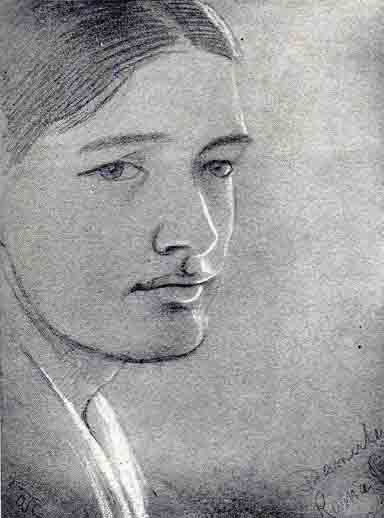
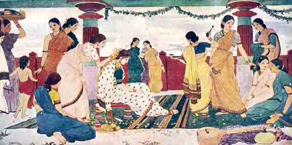
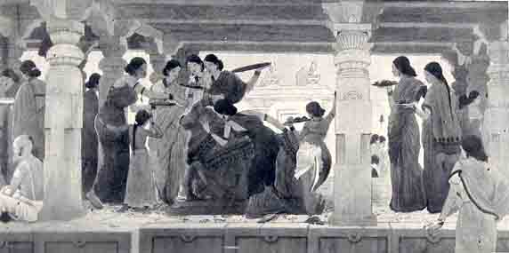

Memories of Damerla Rama Rao
BY OSWALD COULDREY, M.A., (OXON)
(Author of "South Indian Hours")
I have been gradually persuaded by my own conscience, aided from time to time by the painter's elder brother and by the Editor of this magazine, that I ought to put on record my memories of Rama Rao. When I consider how well we knew one another, Ram and I, and how much our association meant and means to me, I am surprised how little of that association I can remember that seems worth recording. I once excused myself to Mr. Ramakotiswara Rao from writing of the painter on the plea that I knew little of his most productive years. I was told that I could at least describe ‘the brooding genius’. The phrase describes the Rama Rao of the Art School period so well that I wonder whether it originated with Adivi Bapirazu. I say the Art School period, because my impression is that before he went to Bombay Ram was distinctly more communicative than he afterwards became, when the diffidence of adolescence, and perhaps a certain estrangement due to our separation (for months, if not miles, are longer at eighteen than later) may have inhibited his impulse to speak out. But the boy's talk, apart from elementary ‘art shop’, was naturally much like that of other boys. What he had to say, that other boys have not, he said with brush and pencil.
He was first brought to me, I believe, about 1912, when he was fourteen, but, for that year and the next I find little written of him in the book of my memory, except that he and his friend Varada Venkataratnam used to bring their drawings to my house. From this time until he went to Bombay I must have seen nearly everything that Ram drew or painted. After my return from Japan in June 1914 we became more intimate. Ram joined his brother and me in our Sunday evening walks. Venkata Rao and I talked hard of everything under the sun (rather more politics than I liked sometimes, I remember) and Ram was quite ready to join in when the themes veered in his direction. Used as I was to solitary rambles, I always strove not to let our talk come too solidly between us and the visual beauty of the Bomoru Hill, or Nagalanka, or the fields of Dowleishwaram; and I remember teaching Ram, as I had taught myself long before, not to walk in the country with his eyes on the ground. I hope psychology will not some day prove me wrong.
In 1914 my students produced two scenes from Julius Caesar. I designed two back curtains for these scenes and Ram for the most part painted them,–they were still in the College when I left. We worked in a class-room of the Training College. I was surprised at Ram's mastery of the technique of scene-painting. He had learnt it from the scene-painter of the local theatre, whom I knew as Mr. Ram, and whose work must have done much to turn his young namesake's thoughts towards pictorial expression. Mr. Ram had clearly a strong natural artistic gift, but he studied, of course, the taste for exuberant decoration then current in theatrical circles. His flamboyant painting contrasted oddly with the quiet power and refinement of his comic acting, or rather character-acting, which would have made him famous, I used to think, in any other country. One of our curtains represented the Senate House where Caesar was murdered, and Pompey's statue, larger than life, was to be painted on it from a small design which I had prepared. To enlarge this to the requisite size was beyond even Ram's draughtsmanship at the time, nor did I succeed any better myself. Damerla Venkata Rao, who was looking on, came to the rescue, and outlined the design perfectly on the larger scale with a free-hand ‘in no time’ as they say. This seemed to me to show a remarkable power of eye and hand. Just so much of the painter's gift Venkata Rao had in a remarkable degree. My account may for the second time seem to be wandering from its theme, but this I do not admit. We are members one of another, and Ram's gifts and work alike can be better understood in the light of a knowledge of the relevant gifts and interests of his relations and early associates. Artistic gifts, graphic and visual, are evidently prevalent in Ram's family. Some work, which I saw by a maternal uncle of his, seemed to me very delicate and remarkable in the barren artistic environment of his time. Ram's sister's work is well known and will, I hope, be better known.
Among my treasured memorials of Rama Rao are four Christmas cards, the earliest of which belongs, I think (for the two earlier are undated) to 1914. These cards have a faint pathos of their own, apart from the tragic interest which now attaches to them. The two earliest consist of two sheets each, folded double and stitched with silk ribbon into a booklet. The outer leaves in each case are of stiff drawing paper and bear a small landscape by Ram. The inner leaves are thinner and bear the mottoes and messages usual on Christmas cards, indeed at first sight they appear to have been torn out of rather superior printed cards (they are noticeably simple and elegant both in style and wording) and used with Ram's landscapes. In fact they are examples of his brother's calligraphic genius; copied, no doubt, but not by machinery; vulgarized beauty re-consecrated by handicraft in a strange land. Both pictures have a group of palms reflected in still water. The first, very small, seems to be a memory of Nagalanka (as the riverside pastures at Rajahmundry are called), for there are huts and what seems a kiln; but the trees might be Egyptian date-palms; the young painter's imagination is still bookish. In the sky lingers a primrose afterglow, the reflection of which in the pool is treated as lovingly as by still water. The next year's landscape is a sepia monochrome, an upright picture this time, twilight, with a moon and a bat. The trees are now our true palmyras. The picture is no longer than the first, but has a border of figures and foliage delicately drawn in pencil, the whole making a charming design. The allegory of the border is distantly related, perhaps, to some drop-curtain of the Rajahmundry theatre. I recognize Painting, Music and Poetry, stars, clouds, a shower of flowers, tree-canopies, and an hourglass in a setting sun. The Muse of Painting sits at an easel; on her tiny card or canvas she has just traced in faintest outline the pool and palmyras of the central picture.

"Rama Rao as I knew him"
The third card is larger, a single sheet of dark-green drawing paper folded double. On the outside, under the greetings and a few red roses painted in ‘body-colour’, are the names of both the brothers and the date 1916. Inside is pasted a delightful water-colour of hilly country, probably near some Bombay hill-station. This is the most charming of Rama Rao's landscapes known to me. Very simply and directly painted, it composes exquisitely. It is three inches by seven. Ram always liked the long oblong. This landscape hailed of course from Bombay, whither the young painter proceeded in the course of 1916 to study in the Art School. The wisdom of Ram's choice of a school has been questioned in certain quarters, and as I was partly responsible for it, I should like to say something on the question here, at the risk of adding fuel to the fires of a controversy which probably rages as hotly in India as that between the schisms, irreverently known to one another as the photographic and the jazz, rages in England. I say that I was partly responsible because Ram himself had resolute notions on the question, out of which it would not have been easy to persuade him; but for these again, I suppose I was partly responsible.
I wanted Rama Rao to be distinctively an Indian painter; but I did not think it essential that an Indian painter should adopt the mannerisms or even the methods of the last millennium, any more than I myself think it necessary to adopt a linear method of painting because the missal-painters of Norfolk ,and the fresco painters of Winchester excelled in that method as late as the early fourteenth century A.D. Moreover I was not satisfied that the painters of the Bengali renaissance (for the choice with Ram lay between Bombay and Calcutta) were infallible interpreters of the essential Indian style in painting. Much of their work seemed to me to be nearer to Japan than to Ajanta, while Ajanta by the same figure seemed and seems to me to be nearer to ancient Greece than to China and Japan. I was told recently by an Inspectress of Girls' Schools in this country that there was a radical difference between the Occidental and the Oriental way of (literally) looking at things, the Occidental seeing them in the round and the Oriental as flat surfaces bounded by lines. Put thus simply, the absurdity of this view is obvious to anyone who knows anything of the history of Art in either continent. I cannot suppose that the modern Bengali painters subscribe to this dogma in its crudest form; indeed it is clear from much of their work that thEy do not; but their failure to notice or to use, except in a very much diluted forM, the comparatively powerful modelling, say of the frescoes on the back wall of the First Cave at Ajanta, argues a hankering in the direction of such heresy, and lends support to the view that their practice has helped to give it currency. Their hankering may be due to local graphic tradition, descending ultimately from the twelfth-century miniaturists of Behar, or their contemporaries, who may themselves have been influenced from China in the same way though not in the same degree as their Nepalese heirs were influenced. This pedigree may justify this feature of modern Bengali painting in itself but it hardly helps their claim (or the claim sometimes made for them) to be the only heirs or re-discoverers of the Indian graphic tradition. It is perhaps significant that while the old Bengal folk-art seems to have been largely linear and always flat, the figures of Balakrishna and other deities painted on glass which used to be sold in my time in the Rajahmundry bazaar, were modeled (or shaded) in a manner remarkably like that followed at Ajanta, especially by the painter of the Samkhapala-jataka in Cave I and of certain scenes in Cave II.
Such were my views at the time, less explicitly formulated but not the less obstinately held for that. Moreover I was convinced that a youth with Ram's powerful visual imagination, having seen what he had, though as in a glass darkly, of Western Art, would not be happy until he had learned all that could be learned about the pictorial use of visible Nature. He would then be in a position, I thought, to select and to reject at will. He should be ‘as a god, knowing good and evil’, not stupidly righteous like Adam before the Fall. It was a heavy burden to throw upon his powers, put I believed them to be equal to it. I counted on being by to help him solve his problems. What was more important, I supposed that he would be given time.
What he did at Bombay I have only the vaguest idea. My impression at the time was that he was woefully idle. Another youth named Bhashyakarlu; of whom I have since lost trace, went to Bombay about the same time, supported, I think, by the Rajah of Pithapur. He used to bring back elaborate studies in oil, of heads and figures, such as grow in Art Schools. I do not clearly remember seeing any such study by Ram, much as I wished him to master the method. Pencil studies of figures he brought home in abundance, as well as landscapes in water-colour and various other designs. These showed such development that I felt satisfied on the whole that his studies and the companionship of his schoolmates and teachers were doing him much good, but I did not cease from upbraiding him for not sticking closer to his regular studies. I heard recently that the Headmaster once complained to Ram's father of the idleness of this ‘unruly young man’. If this report was distinct from that which I am about to recall, I did not hear of it at the time. I was surprised, however, that Ram's obvious gifts had apparently attracted no attention at the School, and for this reason, and also because I was uncertain of his diligence, I wrote to the Principal to ask how Ram was doing. I got merely a routine report from the Headmaster (not the Principal) complaining that he was very irregular in his class work, but otherwise saying nothing of his abilities or prospects. Partly perhaps to counteract the effect of this document Ram seems to have waylaid the Principal with his portfolios of sketches and obtained from him an enthusiastic testimonial, stating that the youth had the makings of a great painter. This must have been in ’17 or ’18. I also remember visiting the School myself in October 1916 on my way to Elephanta. I wanted to find out what I could of Ram's situation and prospects. It was in vacation. I saw one of the professors, of whom Ram often spoke to me later, and who received me charmingly. But he knew nothing of my protege. This was natural enough at that time; and I was as naturally disappointed. Regarding Ram's failure to bring home oil-studies like Bhashyakarlu in my time, I now think it probable that the latter, owing to his greater diligence or docility, had been promoted to the painting class before him, and that Ram was too proud to tell me this plainly, and Bhashyakarlu, perhaps, too loyal.
I have a letter of Ram's dated Matunga, 26th December 1917, It belongs, in a way, to the series of Christmas cards, as it was written to explain that he had been unwell and unable to finish the ‘small painting’ he had started for me. The letter is very typical. "I am glad to tell you one thing, that I changed my residence, to a very beautiful, calm and healthy place, which is outside the city. . . Since three days I have been doing a big composition in oils, which I hope to finish very highly. Its size is 6 feet by 5 feet. No doubt it will take a very long time to finish. But I am doing very interestingly. It is an expensive thing too. The canvas itself cost Rs. 17-8-0, and its frame Rs. 5-0-0. The colours will come to some 10 Rs. by the finishing. . . " This great work fared little better, I believe, than my ‘small painting’ had done, less well perhaps, for the latter may be still extant as one of two very delicate water-colour tree-studies in my possession. One represents part of a nearly leafless bush in the Japanese manner, and its dispositions are worthy of a Japanese. The other is a remarkable experiment in minute leaf-drawing. Two or three small white-flowering bushes are drawn in pencil on dark-green paper with marvelous delicacy, every leaf being outlined. One or two of the blossoming boughs have been painted in body colour, both flowers and leaves being paler than the paper. I have a Rajput Ragini picture in which one of the bushes is treated very similarly, though rather less convincingly. Ram probably saw this or a similar picture. In any case one feels that it was the beauty rather than the wonder of the result that prompted this little drawing. Ram was very sensible of the beauty which could be secured by a judicious use of elaborate detail. One of the most beautiful of his paintings represents the garden of the Art School, with banyans and other trees and plants. It owes much of its beauty to the loving- pains taken over the details. It was painted before I left India in 1919, so that my two little sketches belong to the same period. This love of detail and ordered complexity was, I think, a genuine Indian trait. You seldom hear elaborate finish praised bi professional painters in the West. It doesn't pay there.
During the three years that Rama Rao was studying at Bombay I visited many famous Indian sites, sometimes in company with one or more of my young friends and pupils. Thus in June 1916 Damerla Venkata Rao and I visited the ‘buried cities’ of Ceylon together. The brothers were so closely associated mentally that the ideas aroused by this and other of the elder's pilgrimages cannot have been without effect on the mind of the younger. In the spring of 1917, both the brothers, with their cousin, Kavikondala the poet and Adivi Bapirazu, came with me to Bhuvaneswar. We were all rather awed at first, not to say shocked, if I remember rightly, by the voluptuous sculptures with which those lovely fanes are profusely decorated. Presently Ram declared, I forget with what arguments, that there was nothing shameful in these sculptures. It was a truth which I had not yet entirely learned myself, and I have always remembered this declaration on the part of a boy of 18 as an instance of the fearless perspicacity of genius. It is possible that he had the hint from his older friends (I have never thought to ask them) who were themselves shy of advancing it openly, but even so, Ram's championship is characteristic. My companions also walked the four miles or so to the caves of Udayagiri and Khandagiri, while I was laid up with a cold. I do not remember that these made a deep impression at the time. In October of the same year the two future painters, Adivi Bapirazu and Rama Rao, accompanied me to Ajanta, probably a yet more pregnant pilgrimage for all three of us. We made the last forty miles or so from Jalgaon station in pony tongas in two stages. It was like riding into the far past. I shall never forget the passage of the flooded ford under the walls of the little town of Neri, at dawn on the second day. We met the outgoing cattle in midstream, we walked as if in a dream through the little paved streets and examined the carven wood-work of the lattices. On the way back we passed Neri at noon, and Ram confessed to a feeling of disappointment at finding that the place was not so wonderful as it had seemed before. Its g1amour belonged partly to the dawn, and partly to the wonder in our hearts that had since been spent on matters more worthy of it. But Ram's admission, if it showed inexperience of life, showed also the candour of the artist who is faithful to his impressions and refuses to pretend.
Of Ram's reaction to Ajanta itself, apart from the reverence common to us all, I can only remember that he and disagreed about the artistic merit of the two later Chaitya-halls which seemed to me to be overburdened with sculptural ornament. Regarding the smaller one at least I am now ready to admit that he was right.
From Ajanta I went on alone, I believe, to Sanchi, while my companions were sent home by way of Ellora, which I had seen the year before. I told Ram what I had chiefly admired there myself and he agreed with me in preferring above all else (of the figure sculpture) three groups in the Dasavatara cave, and that of the famous Ravana who strains so realistically at the foundation of the Kailas.
The last excursion I made in Ram's company was to the Godavery gorge in the following April. His brother and Bapirazu came too. The beauty of which we were now in search was not of man's making, but Nature's. We also had plenty of rather boyish fun. We borrowed a D. P. W. staff boat and managed by sailing, quanting and towing to make the narrows and back in the three or four days at our disposal. At nights we sat on deck and talked and sang. The number and length of the songs and recitations out of plays, which Ram had by heart, astonished me, and revealed a side of him of which I was hardly aware. My impression is that they were largely of Bombay origin, and probably the Farsi theatre quickened his evident passion for music. My memory on this point maybe confused. I try vainly to remember whether he had sung to us in earlier days, as on the occasion of my two visits to his cousin's village near Korukonda at Christmas in 1914 and 1915, when singing was often the order of the time. These two visits, I ought perhaps to have mentioned before, for Ram's boyish image is indissolubly linked in my memory with the lovely landscapes of that neighbourhood. But I have not quite finished with the records of that voyage up the river in 1918. One morning while we were all swimming I pushed Ram under the water for fun, forgetting for the moment that he was not so nearly amphibious as his friend Bapirazu. I can still see the expression of mingled panic and disgust with which he clung to the gunwale of a long-boat that happened to be near. On this expedition we both made a number of sketches for landscapes, some of which were duly realised later.
Of the other expeditions made by our little group at this period Ram heard only at second hand, but our recitals doubtless stirred his imagination and prompted him to repeat some of our experiences later for himself. In what was to prove my last year in India, as if urged by some premonition, I traveled so assiduously in my spare time that Ram and I can have met little, since our holidays largely coincided. To the following Christmas belongs the last of his Christmas cards. It bears a large self-portrait in brush line, showing that he was already interested in this method. It is not a joint effort this time, and the lettering, unlike the decoration, shows a falling-off. After this Christmas I was growing rapidly deafer and could no longer take part in general conversation, but I caught one remark of Ram's which I have always remembered. Whether it was his own or borrowed I do not know. He declared that the feet of Burne-Jones' angels had evidently been disfigured by the practice of wearing boots!
I left India in the spring of 1919, and henceforth I can only follow Rama Rao's career by glimpses and conjectures. Ram continued at Bombay till March 1920, and much of the rest of that year seems to have been spent in traveling. I notice that, of the thirteen studies in oil exhibited at the Damerla House in Rajahmundry, all but one belong to this year. The exception, a composition, belongs to the year following.
The fear 1921 is not so easily characterised. The memorial catalogue suggests no great output. I have a letter dated June 22nd, written by Ram when he was recovering from a broken collarbone, which had kept him six weeks abed and idle. The letter is mostly concerned with my own belongings, which he was evidently helping to look after. He asks to be allowed to keep an easel and certain books which he had found useful., viz., Havell's Ancient and Medieval Architecture of India, Sir Alfred East on Landscape Painting and an uncommonly fine, series of pre-war reproductions of Turner's Farnley water-colours. The last was by that time out of print and irreparable, but he could not know this. I let it go without a murmur, though not without a pang! The list throws light on his interests at the time.

"Pushpalankara"
Late this year, says the memorial catalogue, he visited the Oriental Society of Indian Art at Calcutta. Of this important visit I would gladly know more. I wonder whether any water-colour figure compositions in the flat linear style, which appear immediately after, preceded it. I believe that he had hankerings after such a method even before I left India; but I suspect that it was the sight of the work and the influence of the ideas of the Calcutta painters which led him to adopt it almost exclusively. In February ’23 he wrote to me: "Throughout this whole year I was working very hard. I cultivated a style of painting which is purely Indian and my own. Mr. Abanindranath Tagore who is the greatest artist of the Oriental arts in India now expressed that my style of painting is purely Indian and will form a new school of Indian Art, and all my pictures were highly appreciated by him." Certainly the Krishna Leela which is the nearest of his masterpieces to this visit in time, being painted in 1922, is also the nearest in spirit to the work of the Calcutta School. It may even reasonably claim to be regarded as on the whole his most successful picture. The undulating, lyrical rhythm, and the absence of any effort to transcend the second dimension seem (at first sight at least) to suit the purely linear method better than the solider and more static compositions which he afterwards tried to render in it. With this picture (now, thanks to the piety of his brother, my own most cherished possession) only two others, as far as I am able to judge, deserve to be compared, the larger Nandi-Pooja and the Pushpalankara, the second of which I know only from photographs. Both these pictures date from 1923. Both show a certain revival of Western influence, Greeker poses and draperies, yearnings into the third dimension, furtive lights and shadows. It is obvious that the painter is not content with what he had so happily achieved in the earlier picture. The dilettante may be conscious of incongruities in the new experiment; but I ask myself whether this feeling be more than a matter of trivial associations, such as always have to be waived in favour of a pioneer,–a pedant might even find precedents In favour of the young painter's procedure. I have seen damsels almost as nearly Greek on Gupta door-jambs; Ajanta painters used bolder shadows on a linear scheme; Kiyonaga's far deeper distances are one of his peculiar charms. It seems to be the fashion to prefer Ram's landscapes to his figure pictures. Apart from the garden landscape already mentioned I can remember none (and they seem mostly to have been painted in my time) which stands out from the work of his Indian contemporaries as the best of his figure-pictures stand out. How delightful are the forms and rhythms, how complicated and yet impeccable the scheme, of the three pictures above mentioned! How accomplished, too, within its self-imposed limits, is the representation! Never, as far as we know, since Ajanta had so much of the visible aspect of Hindu social life (if I may call Ajanta Hindu for the nonce) been used pictorially with such triumphant ease and mastery. Nay, one feature at least, which plays an important part in the living Indian scene, the droop and flow and fold of drapery, is rendered in a way which some at least of the Ajanta painters would surely have envied. I am thinking particularly of the painter of the Kempeyya Jataka in Cave I, one of whose compositions, a long group under a Mandapa, bears a distinct general resemblance to Rama Rao's Nandi-Pooja, and who shows a peculiar interest in the rendering of drapery. It is true that the modern achieves his purpose with the help of observations borrowed from the Greek tradition, but these are not foreign to him as they are in Europe, for they are derived from a spectacle which must have been the very double of that which he portrays. This Greekness of the South Indian spectacle struck me very forcibly when I first came to the South. I always dreamed of seeing it some day rendered pictorially, and when I saw Ram's picture at Wembley my dream came true.

Nandi-Pooja
Others, it seems, reacted otherwise. "Even though the subject-matter be Indian, as when Indian figures are put into the framework of an Ajanta Vihara, there is a total failure to seize the spirit of Ajanta and to create a true Indian atmosphere. These figures are Indian studio models posed according to European academic rules, arranged mechanically in Leightonesque attitudes in a decorative pattern, but they are wholly un-Indian in thought and unnatural in expression. The artist is bound hand and foot by a scholastic tradition foreign to his own nature and is unable to find himself." Thus the (English) father of the Calcutta School dismisses (Rupam, January 1925, the month before Ram died) the Bombay exhibits at Wembley. It is an obvious caricature of the Nandi-Pooja and Ram's other pictures; but horribly stuffed as it is with epithets of war, I doubt if it means much when analysed except that, for Mr. E. B. Havell, any reminiscence of Leighton (who is out of fashion in the West) destroys ‘that Indian feeling’. Leighton for him means South Kensington, studios, models, academic rules, a dead scholastic tradition, mechanical arrangement and all that. For Rama Rao Leighton stood for something quite different. He stood for the fresh and wonderful art of Greece and for the living world behind it, which was nearer to Ram's than it could ever have been to Mr. Havell's. This after all is the natural response of a youth in Ram's position, a born visualizer and artist who knows nothing of fashions and fopperies, the satieties and sentimentalities of Paris and London. It was not an attitude foreign to his nature imposed upon him at the Art School. The Art School merely taught him to do what he had dreamed. I happen to know this, but my testimony will not appear surprising to anyone who conceives the situation dispassionately.
What Rama Rao's final development would have been it is not so easy for ordinary mortals to conjecture. That it remains a matter of conjecture is one of the tragedies of Art. Of the loss which Indian painting suffered in Rama Rao's untimely death I fear to say more, for though I know better than most how great it was, I cannot easily separate that knowledge from the feeling of what I have lost myself.
BACK